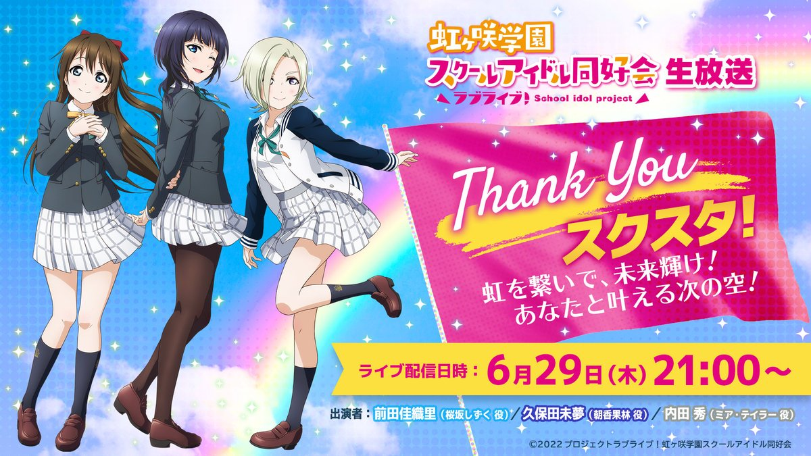
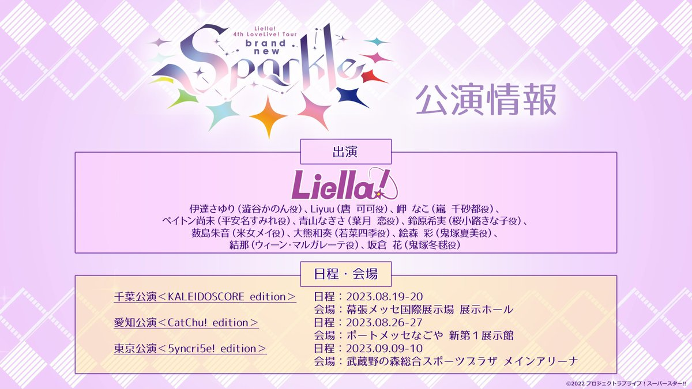

【联动比赛日程】
●7月1日：FC横滨 出演者：内田彩
●7月8日：广岛三箭 出演者：内田秀
●8月12日：横滨水手 出演者：饭田里穗
●8月26日：大阪樱花 出演者：久保田未梦
●9月2日or3日：FC东京 出演者：青山渚
●10月21日or22日：京都不死鸟 出演者：铃原希实
【开播时间：2023年7月】
魔法、奇迹和祝福。在“numazu”长大的少女夜羽，在海涛声和森林的呢喃声中长大，因为无法适应这个小镇，飞奔到了“东海”。怀着与“东海”一起做大的梦想。然而，那个模糊的梦还没有变成“声音”。心为音，天地为歌。人与兽、树与海，皆有声。所有的声音都会聚集和分散，最终形成音乐。它会在世界上发出什么样的声音，成为什么样的音乐？寻找心声的旅程，意外的开始了。以回家为起点的故事《幻日的夜羽-SUNSHINE in the MIRROR-》
🌈生放送情報🌈
ラブライブ！虹ヶ咲学園スクールアイドル同好会生放送 Thank You スクスタ！虹を繋いで、未来輝け！ あなたと叶える次の空！ 日程：6/29(木)21:00～ 出演：前田佳織里、久保田未夢、内田 秀 ※いつもより1時間遅い21時開始となりますのでご注意ください。
#虹ヶ咲 でイラスト募集中✨ 詳細✅ https://lovelive-anime.jp/nijigasaki/detail.php?p=01_2202
💫――――📢 23時59分 受付終了 📢――――💫
ラブライブ！スーパースター!! Liella! 4th LoveLive! Tour ～brand new Sparkle～ チケット最速先行抽選申込は本日まで💨 11人になった #Liella! の初ライブツアー🎉 各公演ごとにユニットコーナーも❗ 詳細はこちら👀
https://lovelive-anime.jp/yuigaoka/live/live_detail.php?p=4thlive #lovelive
